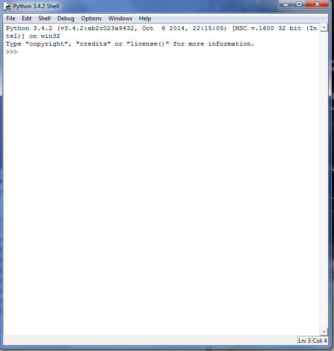
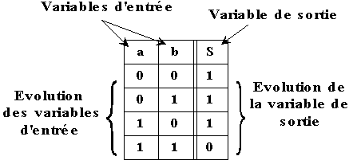

Nos cours en ISN ont commencés par de simples leçons sur des algo en utilisant le logiciel de programmation Python pour faciliter l'apprentissage. Nous avons sur Python appris les variables, les listes, les différentes façon de traduit en language python un algorithme écrit en français. Voici l'interface plutôt simpliste du logiciel sur lequel nous avons travaillé :
Après ces premières approches de programmation nous avons travaillé sur les tables de vérité et les fonctions booléennes dont voici un exemple accompagné d'une légende explicative :
Dans les grandes lignes, c'est ce que nous avons principalement travaillé durant un certain moment. A noter que ces cours sur le binaire se rapprochent beaucoup de certains en spécialité mathématiques. Vous êtes maintenant invité à vous rendre dans le menu à gauche de la page afin de vous rendre sur un autre cours que nous avons étudié.
Mise en page par RUBIO Anthony, élêve de Terminale S1